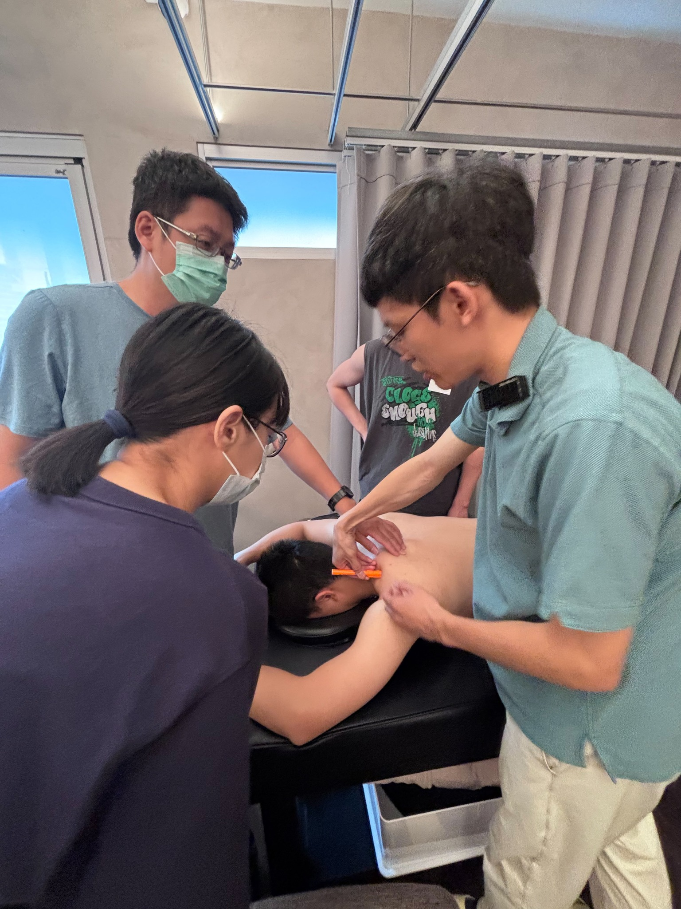
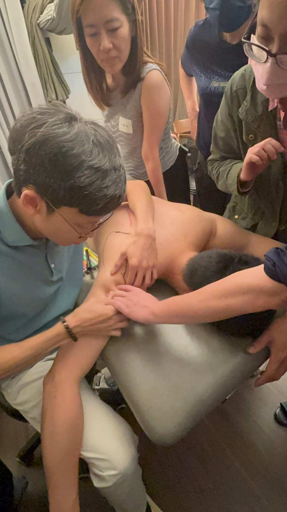

今天是母親節，也是第四屆表面解剖工作坊開課的日子。
今天是母親節，也是第四屆表面解剖工作坊開課的日子。
教完第三屆後，我稍微休息了一陣子。這段期間，除了日常龐大的診務與家庭生活，也持續向外進修，學到了許多實用的新技術。坦白說，在極度忙碌的生活夾縫中，要再擠出時間與精力來備課、辦工作坊，真的非常不容易。
但在備課的深夜裡，總會反覆想起自己當初開課的初心，以及一路走來學習徒手傷科的心路歷程。我總狂妄地期盼著，能透過自己這一點點微小的作為，為中醫徒手傷科的學習環境，注入一些不一樣的能量。
這幾屆教學下來，我觀察到一個很有趣、也很真實的現象：多數醫師都非常喜歡學習「手法」。
每當課程段落進入好用的手法練習時，大家總是特別投入，這很正常，畢竟學了新招式，回去診間就想立刻幫助患者。然而，萬變不離其宗，最真實的原則還是那條：「任何能信手捻來的精妙操作，都必須建立在極度穩固的基礎上。」
腦海中的解剖學知識，該如何在活生生、會呼吸的人體上，精準分離出各個肌群？怎麼把書本上平面的 2D 解剖圖，轉換成手中摸得到的 3D 立體構造？這些，都是在操作手法之前，必須先千錘百鍊的「內功」。
具備表面解剖的辨識技能，就是所有臨床應用技巧與工具的根本。 沒有精準的地圖，再好的手法也可能迷失方向。
這次課堂上，有一位很特別的學員。他是一位香港的中醫師，昨天半夜才抵達台灣，今天上完一整天的課後，隨即又要搭機飛回香港。真的是專程飛過來上課，然後又回去了。
出於好奇詢問了緣由，才知道在香港，針對中醫師並沒有這樣結合徒手與解剖的課程資源；而當地的物理治療圈，也有著嚴格的規範，不開放非 PT 背景的醫療人員跨界進修。(若資訊有錯還請指正)
這件事讓我非常驚訝，除了由衷敬佩這位香港醫師渴求新知的強大精神，我也在心裡深深感恩：台灣能有這麼開放、包容的醫療環境，讓我們能毫無阻礙地去跨界學習。
在課堂上，我一向樂於分享我的徒手技術是從哪些外部課程學來的。遇到對這些課程有興趣的醫師，我也總是大力推薦他們勇敢跨出去。
我始終相信，出去走走、看看其他醫療專業人士都在學些什麼，甚至跟著一起練，是避免自己閉門造車、眼界狹窄的最好方法。各個醫療專業之間，唯有放下成見、互相交流與理解，才能真正為患者編織出最適切、最堅固的醫療網絡。
繼第四屆之後，還有今年年底的最後一梯的第五屆。
未來表解工作坊會繼續深化表解，還是轉換新主題？坦白講，我也還在滾動式調整與構思。但看著這幾屆醫師們課後滿滿的回饋，我知道堅持做這件事是有意義的。
如果透過這樣一個小小的工作坊，能改變一些中醫同道們的視野，為臨床診療增加一點不同的觀點與解法，最終真正幫助到更多人——那麼，這一切的努力，就完全值得了。
謝謝每一位來上課的醫師，一起在追求務實的學醫路上，繼續前行！
拾初 #表面解剖與徒手入門工作坊第四屆

